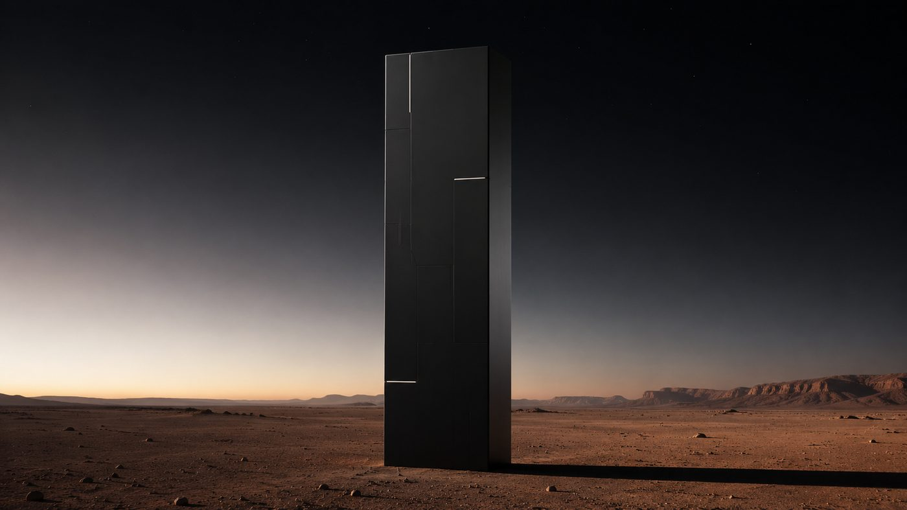

Why I'm Building a Vertical Strategy OS - Not Another Dashboard
KSA businesses don't need more data. They need a decision recommendation.
KSA businesses don't need more data. They need a decision recommendation.

Every Saudi company I work with has more data than they're using. Dashboards in Power BI, spreadsheets in Excel, exports from Salla, exports from Zid, exports from their accounting system. None of it tells them what to do next.
It's a vertical-first software product - starting with logistics - that does three things every week:
One: Tracks the 8-12 KPIs that actually move outcomes in your sector. Not 50 vanity metrics. The ones that matter.
Two: Tells you what changed and why. Not just "on-time delivery dropped 1.4%", but "on-time delivery dropped 1.4% this week driven by three routes in north Riyadh; driver capacity is normal; suggest reviewing dispatch sequencing on Route 7."
Three: Turns recommendations into action items with owners, deadlines, and a feedback loop. So the same problem doesn't re-emerge in 6 weeks.
Horizontal dashboards (Tableau, Power BI, Looker) are built for everyone, and therefore fit no one specifically. To make them useful in your business, you build the analysis layer yourself.
A Vertical Strategy OS embeds the analysis. We know what "good" looks like in last-mile logistics in KSA. We know which metrics correlate with churn. We know how to read driver utilization. Your business gets that intelligence on Day 1.
After logistics, we expand to F&B, retail, and SaaS. One sector at a time, deeply.
Twelve design partners in logistics. SAR 4,500-25,000 per month depending on tier. Joining the waitlist gets first access and 50% off first 6 months for design partners.
Why build this as software now? Because the consulting model, what LEOMAX does today, caps at the bandwidth of the team. Software doesn't cap. And the businesses that need this don't all need a custom engagement; many just need the operating system.
Book a free 30-min call with Anas. We'll figure out the right starting point.
Book a Call Request a Free Brief